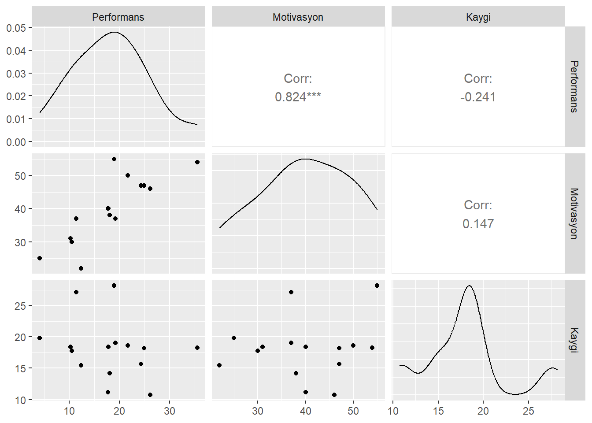
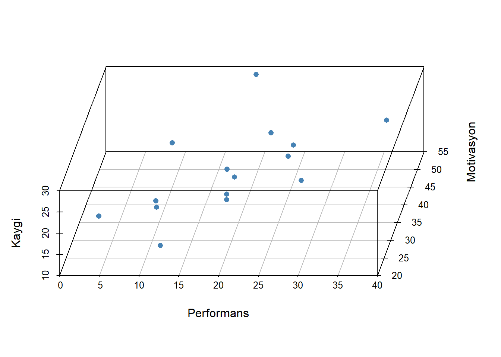
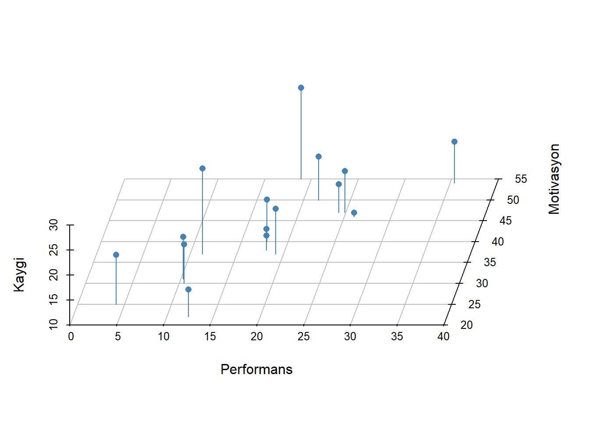

Regresyon Modelleri
- Çoklu regresyon her bir bağımsız değişkendeki değişikliklerin bağımlı değişkendeki değişikliklerle ne ölçüde ilişkili olduğunu kestirir. Ancak bağımsız değişkenler arasındaki korelasyon yordama sürecini zorlaştırır.
1 Bağımsız değişkenler arasındaki ilişki
ceteris paribus
- Örneğin, \(X_1\) ve \(Y\) arasındaki korelasyon katsayısı 0.40, \(X_2\) ve \(Y\) arasındaki korelasyon katsayısı 0.60, \(X_1\) ve \(X_2\) arasındaki korelasyon katsayısı sıfır ise, \(Y\)’nin varyansının iki değişken tarafından açıklanan toplam oranı iki değişkenin \(Y\) ile korelasyonlarının kareleri toplamından elde edilebilir:
\(0.40^2 + 0.50^2 = 0.16 + 0.25 = 0.41\)
Ancak, uygulamada çoğunlukla \(X_1\) ve \(X_2\) birlikte değişim gösterirler ve iki değişkenin \(Y\) ile korelasyonlarının kareleri toplamı çok yüksek bir oran verir.
Bunun nedeni, iki bağımsız değişkenin aralarındaki korelasyondan dolayı her bir bağımsız değişken tarafından açıklanan \(Y\) varyansının bir kısmının üst üste gelmesidir.

- Modeldeki bağımsız değişkenler arasındaki ilişkilerin kontrol altına alınması, modeldeki bir değişkenin bağımlı değişken üzerindeki etkisini incelerken, modeldeki diğer bütün değişkenlerin sabit tutulmasıdır (ceteris paribus)
2 Uygulama
veri seti 🔗 Performans.sav
Performans: Öğrencilerin matematik performans düzeyleri olup eşit aralık ölçeğinde ölçülen sürekli bir değişkendir.
Motivasyon: Öğrencilerin motivasyon düzeyleri olup eşit aralık ölçeğinde ölçülen sürekli bir değişkendir.
Kaygı: Öğrencilerin kaygı düzeyleri olup eşit aralık ölçeğinde ölçülen sürekli bir değişkendir.
Güven: Öğrencilerin matematiğe karşı güven düzeyleri olup eşit aralık ölçeğinde ölçülen sürekli bir değişkendir.
Analize başlamadan önce değişkenlerin betimsel istatistikleri ve değişkenler arası korelasyonlar incelenmelidir.
Betimsel İstatistikler
library(haven)
library(dplyr)
library(knitr)
performans <- read_sav("data/Performans.sav")
psych::describe(performans) %>% kable(digit=3)| vars | n | mean | sd | median | trimmed | mad | min | max | range | skew | kurtosis | se | |
|---|---|---|---|---|---|---|---|---|---|---|---|---|---|
| Performans | 1 | 15 | 18.176 | 7.828 | 18.041 | 17.925 | 9.215 | 4.112 | 35.501 | 31.390 | 0.283 | -0.384 | 2.021 |
| Motivasyon | 2 | 15 | 39.933 | 10.025 | 40.000 | 40.154 | 10.378 | 22.000 | 55.000 | 33.000 | -0.178 | -1.173 | 2.588 |
| Kaygi | 3 | 15 | 18.071 | 4.769 | 18.298 | 17.860 | 2.247 | 10.720 | 28.169 | 17.449 | 0.593 | -0.079 | 1.231 |
| Guven | 4 | 15 | 21.630 | 7.375 | 22.000 | 21.308 | 5.708 | 8.750 | 38.700 | 29.950 | 0.300 | -0.101 | 1.904 |
- Korelasyon değerleri ve anlamlılığı
library(broom)Warning: package 'broom' was built under R version 4.4.3cor_1 <- cor.test(~ Performans + Motivasyon , data = performans)
tidy(cor_1) %>% kable(digit=3)| estimate | statistic | p.value | parameter | conf.low | conf.high | method | alternative |
|---|---|---|---|---|---|---|---|
| 0.824 | 5.252 | 0 | 13 | 0.54 | 0.94 | Pearson’s product-moment correlation | two.sided |
cor_2 <- cor.test(~ Performans + Kaygi , data = performans)
tidy(cor_2)[,c(1,3)] %>% kable(digit=3)| estimate | p.value |
|---|---|
| -0.241 | 0.388 |
cor_3 <- cor.test(~ Motivasyon + Kaygi , data = performans)
tidy(cor_3)[,c(1,3)] %>% kable(digit=3)| estimate | p.value |
|---|---|
| 0.147 | 0.601 |
- İlişki Grafiği
library(GGally)
ggpairs(performans[,1:3])
- 3D grafik
library(scatterplot3d)
scatterplot3d(performans[,1:3],
pch = 16,
color="steelblue",
angle=75)
- 3D grafik
scatterplot3d(performans[,1:3],
pch = 16, color="steelblue",
angle=75,
box = FALSE,type = "h")Warning: Unknown or uninitialised column: `color`.
- 3D grafik
library(rgl)
plot3d(performans$Performans, performans$Motivasyon, performans$Kaygi,
xlab = "Performans", ylab = "Motivasyon",
zlab = "Kaygi",
type = "s",size = 1.5,col = "red")
rglwidget() 3 Çoklu korelasyon katsayısı
\(R^2\) değeri çoklu korelasyon katsayısı (multiple correlation coefficient) olup bağımlı değişkenin gözlenen değerleri ile bağımsız değişkenlerin en iyi doğrusal kombinasyonu arasındaki korelasyondur.
En iyi doğrusal kombinasyon, bağımlı değişkenin bağımsız değişkenlerden yordanmasında, daha iyi bir iş yapacak regresyon katsayıları kümesi olmadığı anlamına gelir.
model <- lm(Performans ~ Motivasyon + Kaygi,data=performans)
sqrt(glance(model)[,1]) #r.squared değerinin karekoku alınırR değeri bağımlı değişkenin gözlenen ve yordanan değerleri arasındaki korelasyondur.
Bağımlı değişkenin yordanan değerinin bağımlı değişkenin gözlenen değerine mümkün olduğunca yakın olmasını gerektiren en küçük kareler kriterinden dolayı bağımlı değişkenin gözlenen ve yordanan değerleri arasındaki korelasyon eksi değerler alamaz. Dolayısıyla çoklu korelasyon katsayısı 0 ile 1 arasında değişir
Çoklu Korelasyon Formulu \[R_{Y_{12}}= \sqrt{\frac{r^2_{Y_1}+r^2_{Y_2}-2r^2_{Y_1}r^2_{Y_2}r_{12}}{1-r_{12}}}\] \[R_{Y_{12}}=\sqrt{\frac{(0.824)^2+(-0.241)^2-2*(0.824)(-0.241)(0.147)}{1-(0.147)^2}}) = 0.902\]
model_s <- augment(model,data=performans)
cor(model_s[,1], model_s[,5]) # Y ve Y' arası korelasyon .fitted
Performans 0.9019952library(outliers)
model_s$.resid %>% scores(type = "z") [1] 1.45276239 -0.81583220 -0.92417187 0.58361096 -0.21178695 -1.39503047
[7] -0.46313334 -1.03126421 1.07754165 -0.07749693 2.31059738 -0.34324063
[13] 0.20727527 -0.07285515 -0.29697589
attr(,"format.spss")
[1] "F8.2"
attr(,"display_width")
[1] 9öğrencilerin gözlenen performans puanları ve yoradan performans puanları arasındaki korelasyon katsayısı nokta 0.902 eşittir
4 Belirlilik Katsayısı
model <- lm(Performans ~ Motivasyon + Kaygi,data=performans)
glance(model)[,1]Performans puanlarındaki varyansın yaklaşık %81’i öğrencilerin motivasyon ve kaygı puanları tarafından açıklanabilir.
Modele yeni bir bağımsız değişken eklendiğinde, \(R^2\) değeri artar, sadece şans eseri olsa bile. Böylece daha fazla bağımsız değişken içeren model sadece daha fazla bağımsız değişken içerdiği için veriye daha iyi uyum sağlıyor gibi gözükebilir.
\(\text{adj}{R^2}\) değeri, \(R^2\) değerinin modeldeki bağımsız değişken sayısı için modifiye edilmiş versiyonudur. \(\text{adj}{R^2}\) değeri, yeni eklenen bağımsız değişken modeli şans eseri beklenenden daha fazla geliştirirse artar, daha az geliştirirse azalır.
\(\text{adj}{R^2}\) değeri, eksi değerler alabilir ancak genellikle artı değerler alır. Her zaman \(R^2\) değerinden daha düşüktür.
\(R^2\) değeri, \(n\) gözlemlerin sayısı, \(k\) bağımsız değişkenlerin sayısı olmak üzere, aşağıdaki eşitlikle hesaplanabilir. \[R^2_{adj}= R^2 - \frac{k-(1-R^2)}{n-k-1}\] \[R^2_{adj}= 0.814 - \frac{2-(1-0.814)}{15-2-1} =0.783\]
glance(model)[,2]\(adj R^2\) evrende gerçek korelasyonun karesinin daha az yanlı kestirimi olsa da, çoğunlukla \(R^2\) değeri rapor edilir.
5 Kestirimin standart hatası
- Kestirimin standart hatası (standard error of the estimation), modeldeki artıkların karelerinin toplamının, \(n-p\) ( \(n\) örneklem büyüklüğü ve \(p\) modeldeki parametrelerin sayısı) ile bölünmesiyle elde edilen bölümün kareköküdür.
library(outliers)
res <- model$residuals
model_ssqrt(sum((res - mean(res)) ^ 2 / (length(res)-3)))[1] 3.650458glance(model)[,3]6 Model veri uyumu
- Modelin veriye iyi uyup uymadığının test edilmesinde kullanılacak F değeri varyans analizi sonucunda elde edilir.
glance(model)[,4:6] %>% kable(digit=3)| statistic | p.value | df |
|---|---|---|
| 26.188 | 0 | 2 |
F istatistiği 26.2 değerine eşittir ve istatistiğe ilişkin p < 0.001. Bu olasılık 0.05’ten küçük olduğundan, sıfır hipotezi reddedilir.
Bu sonuç motivasyon ve kaygı değişkenlerinin ikisi birlikte kullanıldığında, çoklu korelasyon katsayısının anlamlı olarak sıfırdan büyük olduğunu ifade etmektedir. Diğer bir ifadeyle, motivasyon ve kaygı değişkenleri performansı istatistiksel olarak anlamlı bir şekilde yordamaktadır.
Regresyon modeli veriye iyi uyum sağlamaktadır.
Model sonuçları
tidy(model) %>% kable(digit=3)| term | estimate | std.error | statistic | p.value |
|---|---|---|---|---|
| (Intercept) | 1.744 | 5.096 | 0.342 | 0.738 |
| Motivasyon | 0.686 | 0.098 | 6.975 | 0.000 |
| Kaygi | -0.607 | 0.207 | -2.936 | 0.012 |
Performans puanlarındaki farklılıkların bir kısmı motivasyon puanlarındaki farklılıklardan, bir kısmı ise kaygı puanlarındaki farklılıklardan kaynaklanmaktadır
7 Kaygının sabit tutulması
- Performansın sadece kaygıdan yordandığı basit regresyon analizi gerçekleştirilirse, yordanan puanlar ve gözlenen puanlar arasındaki fark (artıkPER1), performansın kaygıdan yordanamayan kısmı olacaktır.
artıkPER1 <- lm(Performans ~ Kaygi,data=performans)$residuals- Motivasyonun sadece kaygıdan yordandığı basit regresyon analizi gerçekleştirilirse, yordanan puanlar ve gözlenen puanlar arasındaki fark (artıkMOT), motivasyonun kaygıdan yordanamayan kısmı olacaktır.
artıkMOT <- lm(Motivasyon ~ Kaygi,data=performans)$residualsBöylece artıkPER1 ve artıkMOT olarak adlandırılan artık puanlar kaygıdan bağımsız olacaktır.
Diğer bir ifadeyle, kaygı ilişkilerinde herhangi bir rol oynamayacaktır. artıkPER1 puanları artıkMOT puanlarından yordanırsa, artıkMOT puanlarına ilişkin eğim katsayısı 0.686 olarak kestirilecektir. Bu değer, öğrencilerin kaygı düzeyleri kontrol altına alındıktan sonra, motivasyon düzeylerindeki bir birimlik artışın matematikteki performans düzeylerini 0.686 birim artırmaya eğilimli olduğunu önermektedir
lm(artıkPER1 ~ artıkMOT,
data=data.frame(artıkPER1,artıkMOT))$coefficients %>% kable(digit=3)| x | |
|---|---|
| (Intercept) | 0.000 |
| artıkMOT | 0.686 |
\[B_{Y_{12}} = \frac{r_{Y1}-r_{Y2}r_{12}}{1-r^2_{12}}\frac{sd_Y}{sd_1}\]
\[B_{Y_{12}} = \frac{(0.824)-(-0.241)(0.147)}{1-(0.022)}\frac{7.827}{10.025} = 0.879 * 0.780 =0.686\]
Bu değer, kaygı puanı kontrol altına alındıktan sonra, motivasyon puanlarındaki bir birimlik artışın öğrencilerin matematik performansından 0.686 birim artmaya eğilimi olduğunu önermektedir.
((cor(performans)[2,1] - cor(performans)[3,1]*cor(performans)[2,3])/
(1-cor(performans)[2,3]^2))*(sd(performans$Performans)/sd(performans$Motivasyon))[1] 0.68629888 Motivasyonun sabit tutulması
- Performansın sadece motivasyondan yordandığı basit regresyon analizi gerçekleştirilirse, yordanan puanlar ve gözlenen puanlar arasındaki fark (artıkPER2), performansın motivasyondan yordanamayan kısmı olacaktır.
artıkPER2 <- lm(Performans ~ Motivasyon ,data=performans)$residuals- Kaygının sadece motivasyondan yordandığı basit regresyon analizi
gerçekleştirilirse, yordanan puanlar ve gözlenen puanlar arasındaki fark (artıkKAY), kaygının motivasyondan yordanamayan kısmı olacaktır.
artıkKAY <- lm(Kaygi ~ Motivasyon ,data=performans)$residualsBöylece artıkPER2 ve artıkKAY olarak adlandırılan artık puanlar motivasyondan bağımsız olacaktır. Diğer bir ifadeyle, motivasyon ilişkilerinde herhangi bir rol oynamayacaktır.
artıkPER2 puanları artıkKAY puanlarından yordanırsa, artıkKAY puanlarına ilişkin eğim katsayısı -0.607 olarak kestirilecektir. Bu değer, öğrencilerin motivasyon düzeyleri kontrol altına alındıktan sonra, kaygı düzeylerindeki bir birimlik artışın matematikteki performans düzeylerini 0.607 birim azaltmaya eğilimli olduğunu önermektedir
lm(artıkPER2 ~ artıkKAY,
data=data.frame(artıkPER2,artıkKAY))$coefficients %>% kable(digit=3)| x | |
|---|---|
| (Intercept) | 0.000 |
| artıkKAY | -0.607 |
\[ B_{Y_{21}} = \frac{r_{Y2}-r_{Y1}r_{12}}{1-r^2_{12}}\frac{sd_Y}{sd_2} \]
\[B_{Y_{12}} = \frac{(-0.241)-(0.824)(0.147)}{1-(0.022)}\frac{7.827}{4.769}=(-0.370)*(1.641) =-0.607\]
Bu değer, motivasyon puanı kontrol altına alındıktan sonra, kaygı puanlarındaki bir birimlik artışın öğrencilerin matematik performansından 0.607 birim azaltmaya eğilimli olduğunu önermektedir.
((cor(performans)[3,1] - cor(performans)[2,1]*cor(performans)[2,3])/
(1-cor(performans)[2,3]^2))*(sd(performans$Performans)/sd(performans$Kaygi))[1] -0.60728579 Regresyon Sabiti
\[ B_0 = M_Y - B_{Y12}*M_1 -B_{Y21}*M_2 \] \[B_0 = 18.176 - (0.686)*(39.933) -(-0.607)*(18.701) = 1.744\]
mean(performans$Performans)-
model$coefficients[2]*mean(performans$Motivasyon)-
model$coefficients[3]*mean(performans$Kaygi)Motivasyon
1.744129 Bu değer hem motivasyon puanı hem de kaygı puanı 0’a eşit olduğunda yordanan performans puanıdır.
- Böylece yordanan performans puanı
\[Y_{\text{performans}_i} = 1.744 + 0.686 X_{\text{motivasyon}_i} - 0.607 X_{\text{kaygi}_i}\]
10 Standart puanlar ile regresyon
- Çoklu regresyon eşitliğini elde etmeden önce değişkenlerin her biri standartlaştırılırsa (değişkenlerin her birinin ortalaması 0, standart sapması 1 olacak şekilde ayarlanırsa), sonuçlar standart sapma birimlerince ifade edilir.
library(QuantPsyc)
lm.beta(model) %>% kable(digit=3)| x | |
|---|---|
| Motivasyon | 0.879 |
| Kaygi | -0.370 |
- Böylece örnekte standartlaştırılmış değişkenler kullanıldığında, yordanan standartlaştırılmış performans düzeyleri aşağıdaki eşitlikle hesaplanabilir:
\[Y_\text{Zperformans_i} = 0.879 X_\text{Zmotivasyon_i} + -0.370 X_\text{Zkaygi_i}\]
- Motivasyonun standartlaştırılmış eğim katsayısının mutlak değeri, kaygının standartlaştırılmış eğim katsayının mutlak değerinden daha büyük olduğundan, motivasyonun öğrencilerin matematikteki performanslarını yordamada kaygıya göre daha önemli bir yordayıcı olduğu söylenebilir.
|0.879| > |-0.307|
Ancak bağımsız değişkenlerin standartlaştırılmamış eğim katsayılarını karşılaştırmak uygun değildir.
NOT: Bağımsız değişkenler arasında korelasyon olduğunda, standartlaştırılmış eğim katsayısı bağımlı değişken ile bağımsız değişken arasındaki korelasyon katsayısı değildir.
11 Yordanan ve Artık Değerler
- Öğrencilerin standratlaştırılmamış yordanan matematik performans düzeyleri ve standartlaştırılmamış artıkları modelden çekilebilir.
data.frame(
gercek = performans$Performans,
yordanan = model$fitted.values,
artik = model$residuals) %>% kable(digit=3)| gercek | yordanan | artik |
|---|---|---|
| 12.371 | 7.461 | 4.910 |
| 4.112 | 6.869 | -2.757 |
| 21.627 | 24.750 | -3.123 |
| 24.921 | 22.949 | 1.972 |
| 26.088 | 26.804 | -0.716 |
| 17.701 | 22.416 | -4.715 |
| 10.272 | 11.837 | -1.565 |
| 18.898 | 22.384 | -3.485 |
| 19.200 | 15.558 | 3.642 |
| 17.751 | 18.013 | -0.262 |
| 35.501 | 27.692 | 7.809 |
| 18.041 | 19.201 | -1.160 |
| 11.358 | 10.658 | 0.701 |
| 24.256 | 24.502 | -0.246 |
| 10.542 | 11.546 | -1.004 |
- Örneğin, ilk öğrenci için standratlaştırılmamış yordanan değer yaklaşık 7.46, artık ise yaklaşık 4.910’tir.
11.1 Yordanan ve Artık Değerlerin Standart Puanları
library(outliers)
yordanan_s <- model$fitted.values %>% scores(type = "z")
artik_s <- model$residuals %>% scores(type = "z")
data.frame(yordanan_s,artik_s) %>% kable(digit=3)| yordanan_s | artik_s |
|---|---|
| -1.518 | 1.453 |
| -1.601 | -0.816 |
| 0.931 | -0.924 |
| 0.676 | 0.584 |
| 1.222 | -0.212 |
| 0.601 | -1.395 |
| -0.898 | -0.463 |
| 0.596 | -1.031 |
| -0.371 | 1.078 |
| -0.023 | -0.077 |
| 1.348 | 2.311 |
| 0.145 | -0.343 |
| -1.065 | 0.207 |
| 0.896 | -0.073 |
| -0.939 | -0.297 |
- Öğrencilerin standratlaştırılmış yordanan matematik performans düzeyleri ve standartlaştırılmış artıkları modelden çekilebilir.
library(car)Loading required package: carData
Attaching package: 'car'The following object is masked from 'package:purrr':
someThe following object is masked from 'package:boot':
logitThe following object is masked from 'package:dplyr':
recodeavPlots(model)